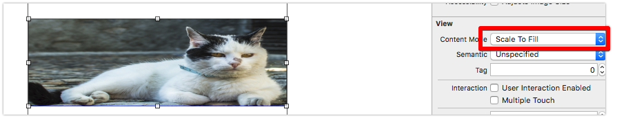

Content Mode : Scale to Fill, Aspect Fit, Aspect Fill 차이 정리
2018-05-21
-읽음
Scale To Fill (기본값)

- 비율 무시! 귀여운 고양이가 옆으로 퍼져버렸습니다.
- ImageView의 Width와 height에 이미지를 늘리고 우겨넣습니다.
- 디자인 가이드로 정해진 레이아웃과 이미지가 아니면 이렇게 이미지를 괴롭히면 안돼요.
Aspect To Fit
- 비율 유지! 원본의 비율을 그대로 유지합니다.
- 이미지는
절대ImageView 밖으로 나가지 않습니다. - ImageView 내부에서 밖으로 나가지 않는 선에서 최대치의 값을 갖습니다.
- 비율이 맞지 않는경우 내부에
여백이 생기게 됩니다.
Aspect To Fill
- 비율 유지! 원본의 비율을 그대로 유지합니다… 만 이미지가 짤리죠
- 위 사진에서 짤리는 부분이 없어보이지만 자세히 보면 이미지가 ImageView 영역 밖으로 나갔음을 알 수 있습니다. (Clip to Bounds) 값을 YES로 하면 짤려서 나오지 않습니다.
- ImageView의 내부에
여백이 절대 생기지 않습니다. - 대신 이미지의 일부가 짤려보일 수 있으므로 인물, 동물 사진에는 적합하지 않을 수 있습니다.